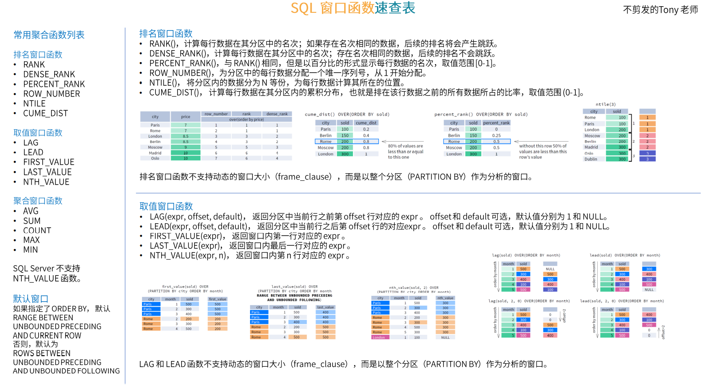

1. MySQL基础
1.0MySQL的数据类型
unsigned 无符号
数值类型
类型 大小 范围（有符号） 范围（无符号） 用途 tinyint 1byte (-128, 127) (0, 255) 小整数值 smallint 2byte (-32768, 32767) (0, 65535) 大整数值 mediumint 3btye (-8388608, 8388607) (0, 16777215) 大整数值 int 4byte (-2147483648, 2147483647) (0, 4294967295) 大整数值 bigint 8byte 极大整数值 float 4byte double 8byte decimal 依赖M和D的值 小数值 如：decimal(5,2) 123.45 字符串类型
日期时间类型
类型 大小(byte) 范围 格式 用途 date 3 1000-01-01~9999-12-31 YYYY-MM-DD 日期值 time 3 -838:59:59~838:59:59 HH:MM:SS 时间值 year 1 1901~2155 YYYY 年份值 datetime 8 1000-01-01 00:00:00 ~9999-12-31 23:59:59 YYYY-MM-DD HH:MM:SS timestamp 4 1970-01-01 00:00:01 UTC ~2038-01-19 03:14:07 UTC YYYY-MM-DD HH:MM:SS 注意：与时区关系. datetime是存储服务器当前的时区. 而timestamp类型,是将服务器当前时间转换为UTC(世界时间)来存储.即datetime与时区无关,存什么,返回什么. 而timestamp存储的时间,返回的时间会随着数据库的时区不同而发生改变.
1.1 MySQL数据库基本操作-DDL
DDL(Data Definition Langauage),数据定义语言，该部分语言包含一些部分：
- 对数据库的常用操作。
- 对表结构的常用操作。
对数据库的常用操作
功能 SQL 查看所有的数据库 show databases; 创建数据库 create database [if not exists] [charset=utf8] 切换数据库 user 删除数据库 drop database [if exists] 修改数据库编码 alter database character set utf8 对表结构的常用操作
功能 SQL 查看当前数据库中的所有表名称 show tables; 查看指定某个表的创建语句 show create table ; 查看表结构 desc ; 删除表 drop table ; 创建表
1
2
3
4
5
6create table [if not exists] <tablename>(
字段1 数据类型[(长度)] [约束条件] [定义字段字符集] [comment '字段说明'],
字段2 数据类型[(长度)] [约束条件] [定义字段字符集] [comment '字段说明'],
字段3 数据类型[(长度)] [约束条件] [定义字段字符集] [comment '字段说明'],
......
)ENGINE=InnoDB DEFAULT CHARSET=utf8mb4 COLLATE=utf8mb4_unicode_ci COMMENT='表名';1
2
3
4
5
6
7
8
9
10
11
12
13
14
15
16
17
18
19
20
21
22
23
24
25
26
27
28
29
30
31
32CREATE TABLE `order_info` (
`id` bigint NOT NULL AUTO_INCREMENT COMMENT '编号',
`user_id` bigint DEFAULT NULL,
`out_trade_no` varchar(300) DEFAULT NULL COMMENT '订单交易号',
`hoscode` varchar(30) DEFAULT NULL COMMENT '医院编号',
`hospital_name` varchar(100) CHARACTER SET utf8mb4 COLLATE utf8mb4_general_ci DEFAULT NULL COMMENT '医院名称',
`depcode` varchar(30) DEFAULT NULL COMMENT '科室编号',
`depname` varchar(20) DEFAULT NULL COMMENT '科室名称',
`title` varchar(20) DEFAULT NULL COMMENT '医生职称',
`hos_schedule_id` varchar(50) DEFAULT NULL COMMENT '排班编号（医院自己的排班主键）',
`reserve_date` date DEFAULT NULL COMMENT '安排日期',
`reserve_time` tinyint DEFAULT '0' COMMENT '安排时间（0：上午 1：下午）',
`patient_id` bigint DEFAULT NULL COMMENT '就诊人id',
`patient_name` varchar(20) DEFAULT NULL COMMENT '就诊人名称',
`patient_phone` varchar(11) DEFAULT NULL COMMENT '就诊人手机',
`hos_record_id` varchar(30) DEFAULT NULL COMMENT '预约记录唯一标识（医院预约记录主键）',
`number` int DEFAULT NULL COMMENT '预约号序',
`fetch_time` varchar(50) DEFAULT NULL COMMENT '建议取号时间',
`fetch_address` varchar(255) DEFAULT NULL COMMENT '取号地点',
`amount` decimal(10,0) DEFAULT NULL COMMENT '医事服务费',
`quit_time` datetime DEFAULT NULL COMMENT '退号时间',
`order_status` tinyint DEFAULT NULL COMMENT '订单状态',
`create_time` timestamp NOT NULL DEFAULT CURRENT_TIMESTAMP COMMENT '创建时间',
`update_time` timestamp NOT NULL DEFAULT CURRENT_TIMESTAMP ON UPDATE CURRENT_TIMESTAMP COMMENT '更新时间',
`is_delete` tinyint DEFAULT '1',
PRIMARY KEY (`id`),
UNIQUE KEY `uk_out_trade_no` (`out_trade_no`),
KEY `idx_user_id` (`user_id`),
KEY `idx_hoscode` (`hoscode`),
KEY `idx_hos_schedule_id` (`hos_schedule_id`),
KEY `idx_hos_record_id` (`hos_record_id`)
) ENGINE=InnoDB AUTO_INCREMENT=13 DEFAULT CHARSET=utf8mb3 COMMENT='订单表'修改表结构
添加表字段,添加到指定字段的后面。
1
alter table <tablename> add <filedname> 类型(长度) [约束] [after <已存在的字段>];
修改表字段名称
1
alter table <tablename> rename column <filedname> to <newfiledname>
修改表字段属性
1
alter table <tablename> modify <filedname> 类型(长度) [其他属性]
删除表字段
1
alter table <tablename> drop column <filedname>;
1
2
3
4
5
6
7
8-- 添加表字段
alter table order_info add `is_delete` tinyint default 1 after update_time;
-- 修改表字段名称
alter table order_info rename column `hosname` to `hospital_name`;
-- 修改表字段属性
alter table order_info modify hospital_name varchar(100) character set utf8mb4 collate utf8mb4_general_ci default null comment '医院名称';
-- 删除表字段
alter table order_info drop column is_deleted;
一、基本SQL
1. 查看MySQL数据库版本
1 | SELECT VERSION(); |
2. 常见关键字
- CURRENT_TIMESTAMP
- DEFAULT CURRENT_TIMESTAMP 表示当插入数据的时候，该字段默认值为当前时间
- ON UPDATE CURRENT_TIMESTAMP 表示每次更新这条数据的时候，该字段都会更新成当前时间
栗子
1 | CREATE TABLE `test` ( |
3. 常用函数
日期函数
- YEAR(date) 获取date类型数据的年
- MONTH(date) 获取date类型数据的月
- DAY(date) 获取date类型数据的日
CONCAT() 字符串拼接函数
concat(col_1, col_2, …)
栗子1：concat函数中无null
1
SELECT region_id, region_name, CONCAT(region_id, '-', region_name) AS a FROM regions;
结果集：
1
2
3
4
5
6region_id region_name a
--------- ---------------------- --------------------------
1 Europe 1-Europe
2 Americas 2-Americas
3 Asia 3-Asia
4 Middle East and Africa 4-Middle East and Africa栗子1：concat函数中有null
1
SELECT region_id, region_name, CONCAT(region_id, null, region_name) AS a FROM regions;
结果集
1
2
3
4
5
6region_id region_name a
--------- ---------------------- --------
1 Europe (NULL)
2 Americas (NULL)
3 Asia (NULL)
4 Middle East and Africa (NULL)
3. SQL 创建/修改唯一索引
创建
1
UNIQUE [INDEX | KEY] [<索引名>] [<索引类型>] (<列名>,…)
栗子
1
UNIQUE KEY `unique_index`(`group_id`, `company_id`, `business_id`)
注意事项：在创建唯一索引时，一定要保证索引的唯一性。如上面栗子的索引字段，保存数据时是重复的，此时索引创建会报错。
修改
1
2ALTER TABLE `TableName` DROP INDEX `INDEX_NAME`;
ALTER TABLE `TableName` ADD UNIQUE INDEX_NAME(`COLUMN`);栗子
1
2ALTER TABLE follow_heart_store_sales_target_collect DROP INDEX `unique_index`
ALTER TABLE follow_heart_store_sales_target_collect ADD UNIQUE KEY `unique_index`(`cdate`,`group_id`, `company_id`, `business_id`)注意：修改索引实际上是删除旧索引后，重新创建合适的索引。
二、CTE(公共表表达式)
1. 什么是公用表表达式或CTE？
- 公用表表达式是一个命名的临时结果集(临时表)，仅在单个SQL语句(例如SELECT，INSERT，UPDATE或DELETE)的执行范围内存在。
- CTE不作为对象存储，仅在查询执行期间持续。
- CTE可以是自引用(递归CTE)，也可以在同一查询中多次引用。
- 与派生表相比，CTE提供了更好的可读性和性能。
2. CTE语法
- CTE主要构成： 临时表名，展示临时表列 (不写默认展示所有)，定义CTE的查询 (单个SQL语句)。
1 | WITH cte_name1[(column_list)] AS ( |
三、MySQL8.0 窗口函数
3.1 什么是窗口函数？
- 窗口函数在MySQL8+才支持的函数，又称分析函数。
- 窗口函数 = 窗口 + 函数。
- 窗口的大小可以是固定的，也可以是可变的，还可以是滑动的。
- 窗口函数可以在查询出来的结果集(该结果集肯定满足某些条件)上，设置一个窗口，为窗口内的每条数据都执行一次窗口函数。
- 一般窗口函数对应的列，会紧跟结果集的后面。
3.2 窗口函数语法
1 | windows_function([expression]) over([partition by <分区的列>] [order by <排序的列>] [rows between <范围>]) |
over中参数可省略。如果为空，则窗口的大小是满足where条件的所有数据大小。
rows betweet的实例
1
2
3
4
5
6
7
8
9rows between 2 preceding and current row -- 取当前行和前面两行。
rows between unbounded preceding and current row -- 取当前行和前面所有行。
rows between current row and unbounded following -- 取当前行和后面所有行。
rows between 3 preceding and current row -- 取当前行和前三行。
rows between 3 precding and 1 following -- 取当前行和前三行和后一行，共5行。- 当省略 rows bteween ,则默认为
rows between unbounded preceding and current row。 - 当省略 order by 和 rows between , 则默认为
rows between unbounded preceding and unbounded following
- 当省略 rows bteween ,则默认为
3.3 窗口函数分类
- 排名窗口函数
- rank
- dense_rank
- percent_rank
- row_number4
- ntile
- cume_dist
- 取值窗口函数
- lag
- lead
- first_value
- last_value
- nth_value
- 聚合窗口函数
- ave
- sum
- count
- max
- min


SQL 窗口函数速查表_Tony.Dong的专栏-CSDN博客
3.4 窗口函数应用
附录1： windows命令行操作数据库
1. 命令行启动停止MySQL
1 | net start/stop <服务名称> |
2.进入MySQL
1 | mysql -u root -p -h localhost [-P 3308] |
最后更新： 2022年05月11日 17:08